Who is Ryoken Tanno?
-
Instagram
自己紹介
2003年3月21日生まれ 20歳
出身：埼玉県さいたま市
好きなスポーツ：サッカー
好きな食べ物：パスタ、ピザ
来歴
2003年 3月21日生まれ
2018年 川越東高校入学
2019年-2020年 イタリア留学
2022年 川越東高校卒業
2022年 明治大学 総合数理学部入学
学生生活
高校・大学
-
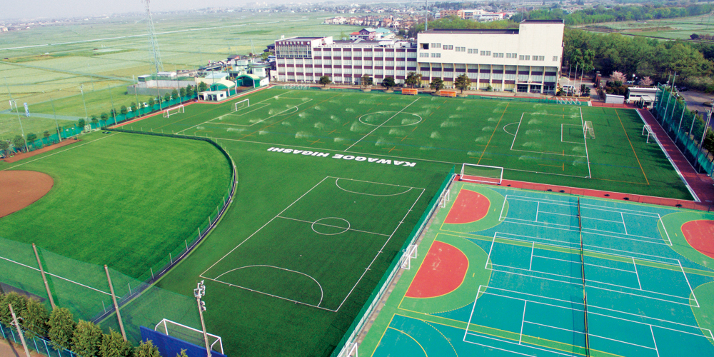
川越東高校
埼玉県川越市にある私立高校。
駅から離れているため陸の孤島とも呼ばれる。
スクールバスを利用する生徒が大半を占める。
文武両道を目標としている。
人工芝のグラウンドが魅力的。そのためサッカー部の生徒が多い。
カワトンと呼ばれることが多いが、人によってはカワトウと呼ぶ人もいる。
-
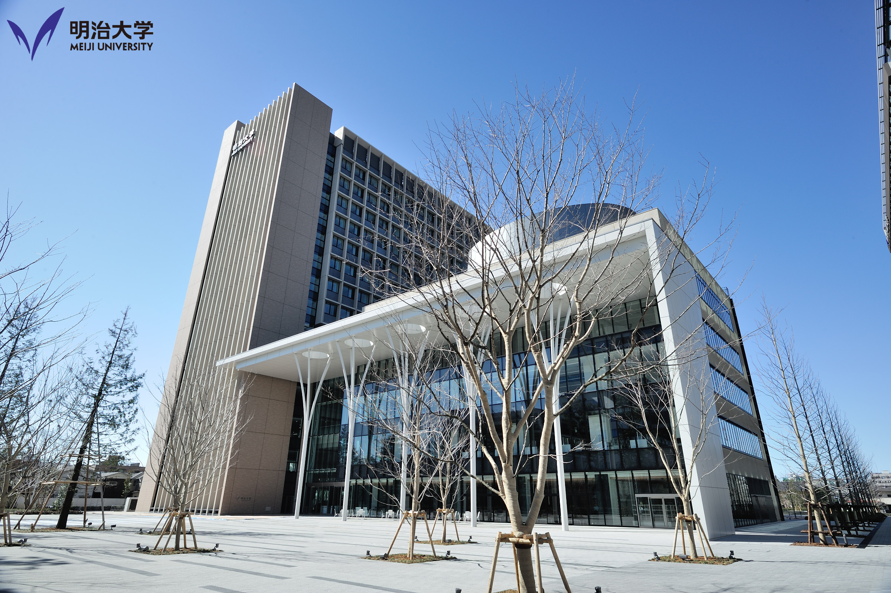
明治大学
明治大学 総合数理学部 ネットワークデザイン学科
総合数理学部と国際日本学部は中野キャンパスにある。
新宿駅から一駅で通いやすい。
学食の評判はあまりよくない。
帝京平成大学と隣接している。
中野駅前の商店街にはたくさんのお店があるため、昼食に困ることはない。
明治大学 総合数理学部ホームページ
思い出
イタリア留学
ローマ
2019年9月から2020年3月までイタリアのローマに留学していた。
ローマの学校で仲良くしてくれた友達とのみんなで年越しをした時の写真である。
友達と年を越すのは初めてだった。
学校では現地の学生とともに授業を受けていた。
学校では、イタリア語が理解できなくても優しく教えてくれた。
イタリア人の友達はみんな優しく、フレンドリーだった。
コロナの影響で早期帰国となってしまったことはとても悔しかった。
国内旅行
上高地
長野県の上高地にある大正池の写真である。
池が色鮮やかでとてもきれいだった。
海外旅行
France
Paris
-

La tour Eiffe
-
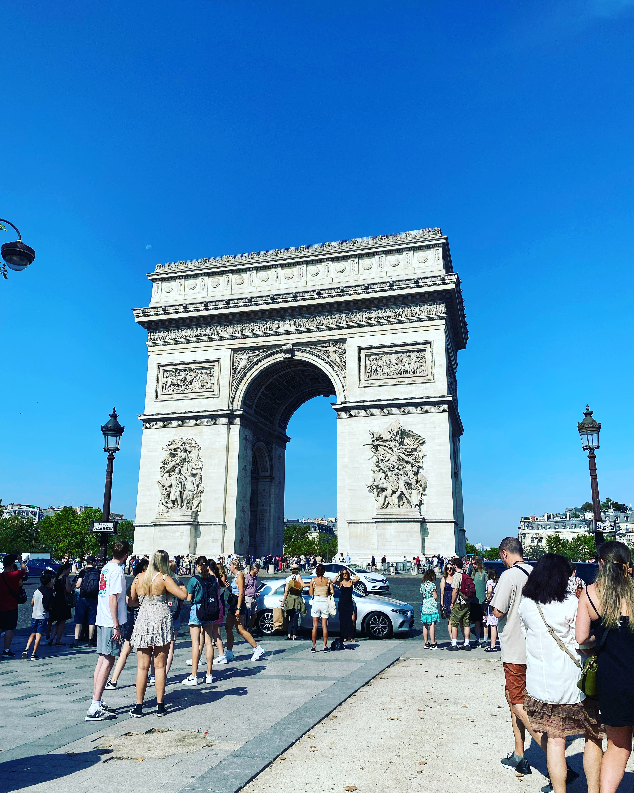
Arc de triomphe de l'Étoile
-
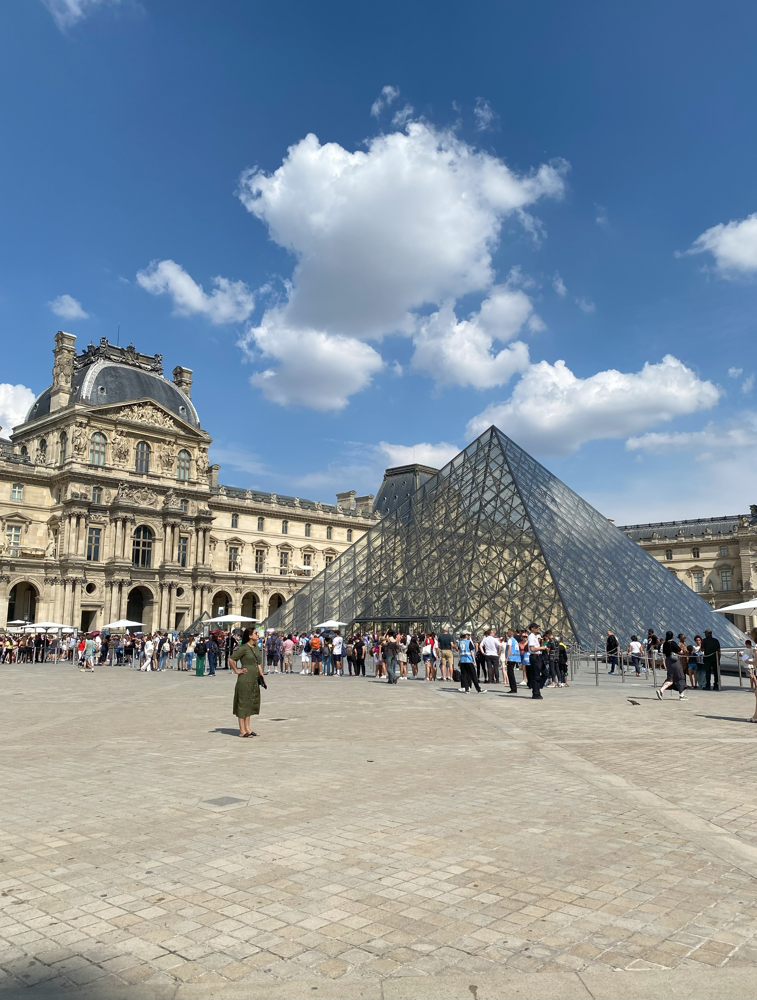
Musée du Louvre
-
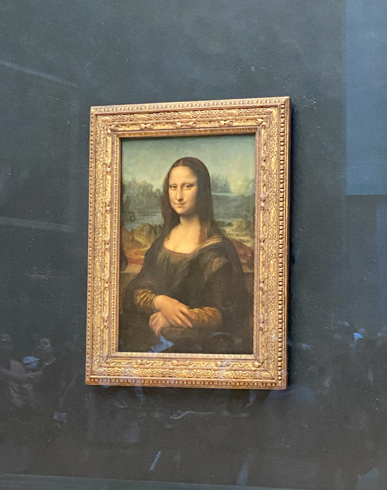
La Joconde
-
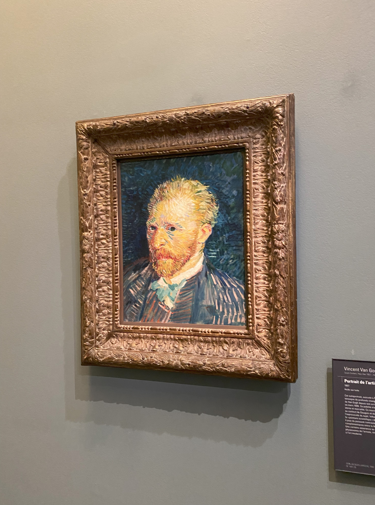
Vincent Willem van Gogh
-
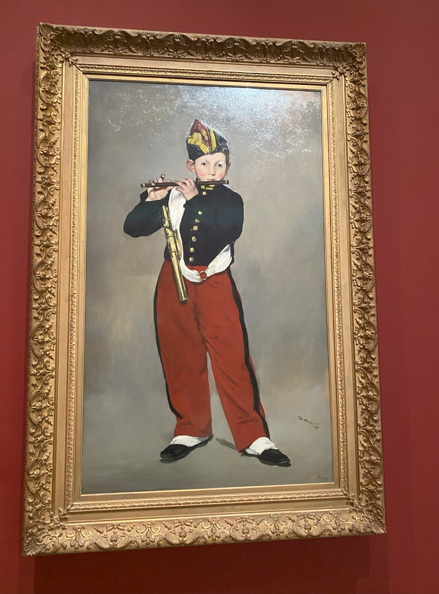
Le Joueur de fifre
Italy
Venice・Rome
-
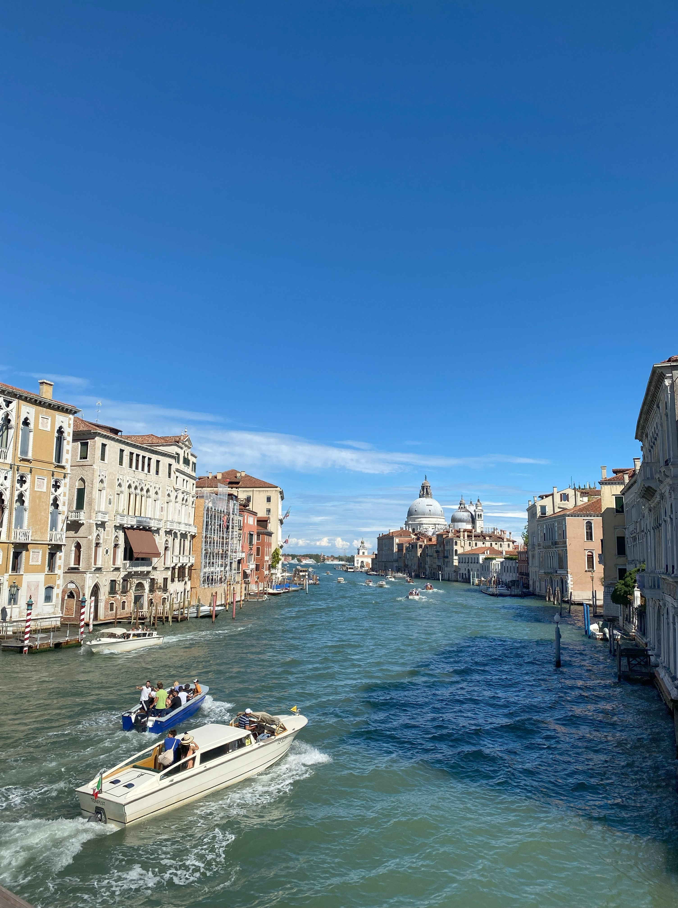
Grand Canal
-
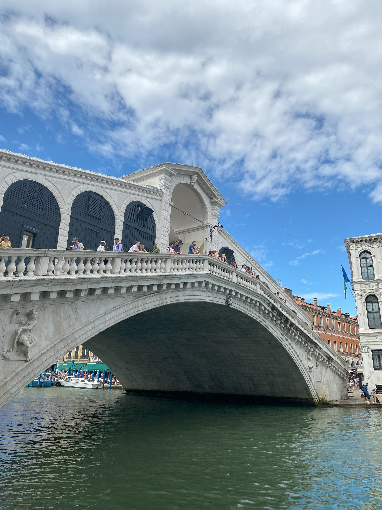
Rialt Bridg
-
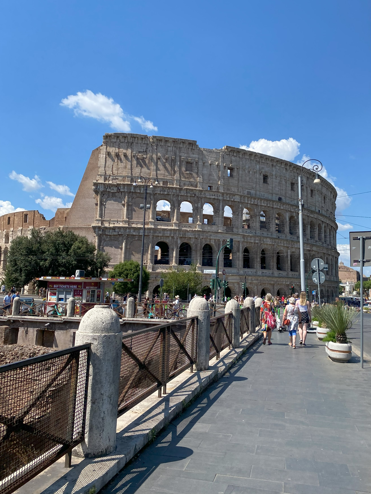
colosseum
-
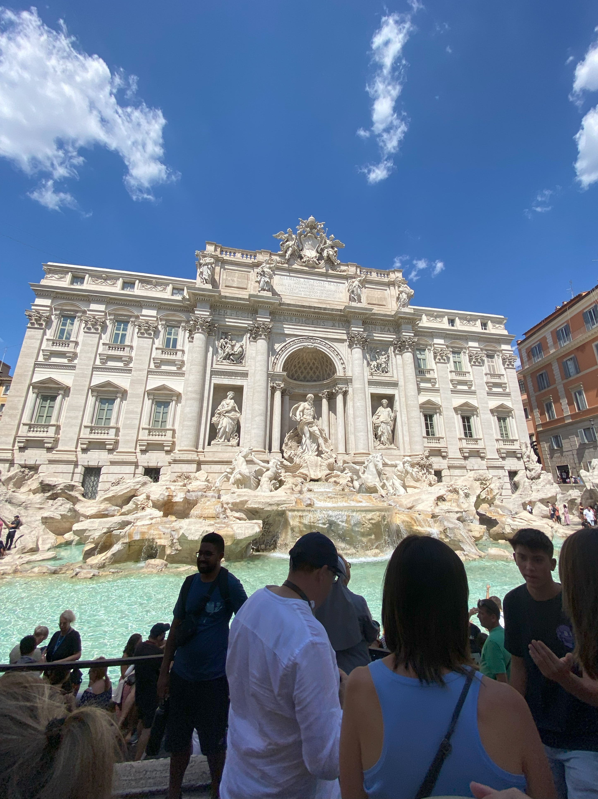
Trevi Fountain
-
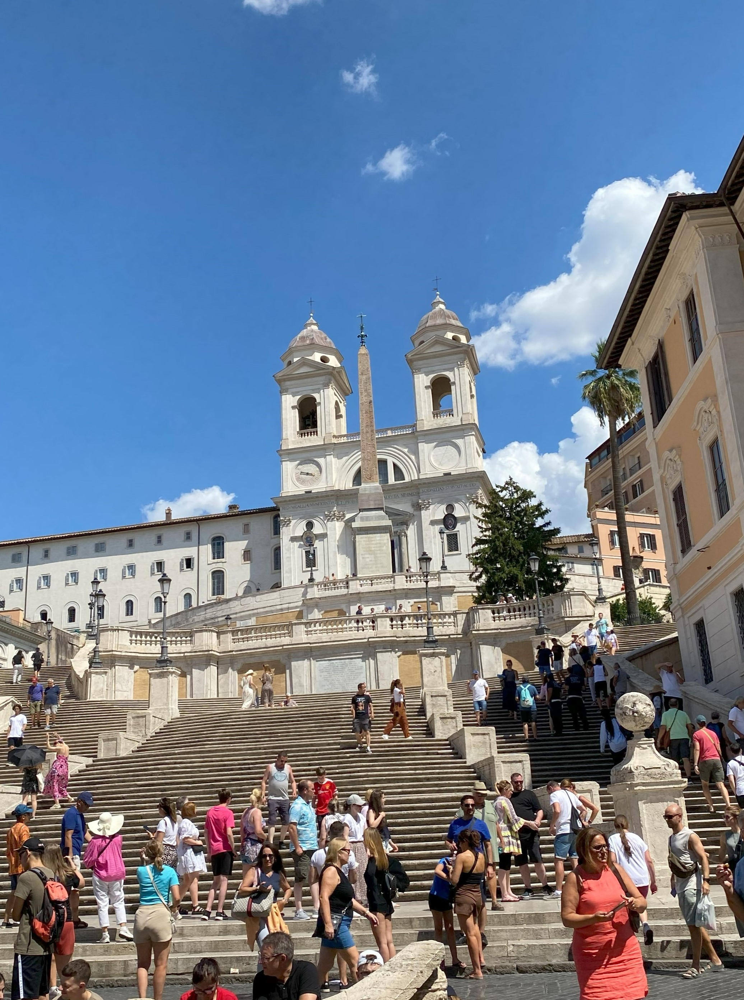
spanish steps
-
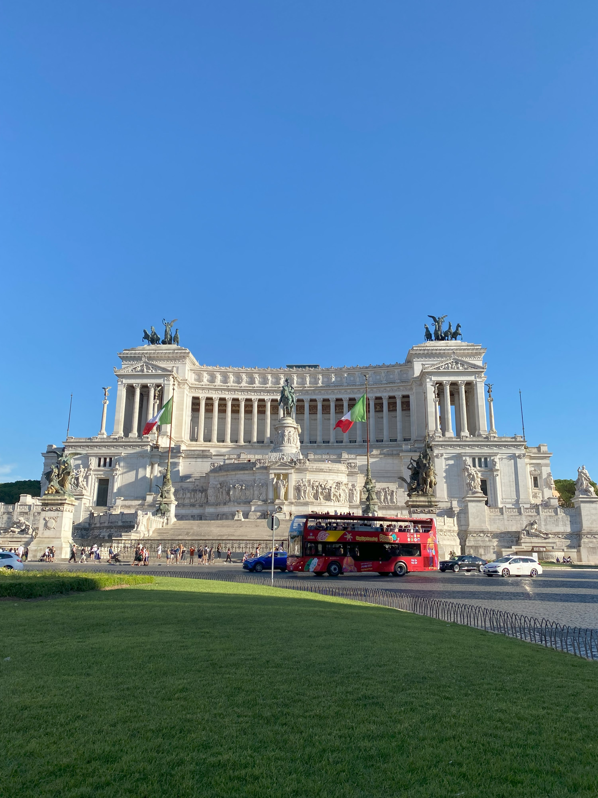
monument to victor emmanuel II